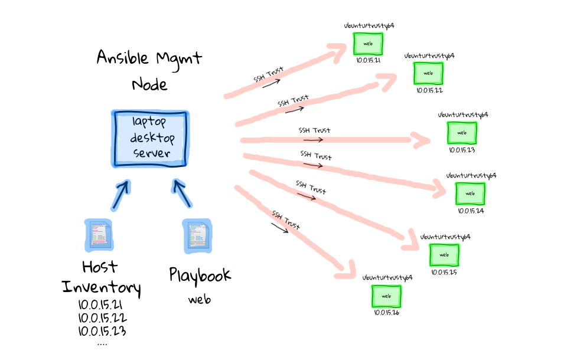

Ansible tutorial

Ansible is a configuration management software that lets you control and configure nodes from another machine. What makes it different from other management software is that ansible uses (potentially existing) SSH infrastructure, while others (chef, puppet, ...) need a specific PKI infrastructure to be set-up.
Ansible also emphasises push mode, where configuration is pushed from a master machine (a master machine is only a machine where you can SSH to nodes from) to nodes, while most other CM typically do it the other way around (nodes pull their config at times from a master machine).
This mode is really interesting since you do not need to have a 'publicly' accessible 'master' to be able to configure remote nodes: it's the nodes that need to be accessible (we'll see later that 'hidden' nodes can pull their configuration too!), and most of the time they are.
Uses
- Use cases
- Provisioning
- Configuration management
- App deployment
- Continuous delivery
- Security & compliance
- Orchestration
- Integrations
- Infrastructure
- Networks
- Containers
- Cloud
- Services & applications
Architecture

Schedule
- Day 1: Ansible Fundamentals
- Day 2: Beyond the basics: Roles, Modules, Encryption, Management
- Day 3: Applied Ansible
Notes
Etherpad: https://beta.etherpad.org/p/vgansible
Initial setup
First, download the Vagrantfile providing the environment for our class.
Bring up vagrant boxes:
vagrant up
When finished, connect to control machine:
vagrant ssh control
On control machine:
# generate SSH keypair for deployment to managed hosts
ssh-keygen
# install required packages
sudo apt-get install -y python-yaml python-jinja2 python-paramiko python-crypto git
# clone this repo on the control machine
# this repo contains inventory files, exercises and playbooks we'll use during #
# our workshop
git clone https://github.com/gossetx/ansible.git
cd ansible
# install ansible
./bin/ubuntu_install_ansible.sh
Reference: Installing Ansible
Terminology
Reference: Ansible Glossary:
- command or action: ansible module like just a shell command. Intro in step-02.
- task: it's combine an action (a module and its arguments) with a name and optionally some other keywords (like looping directives).
- playbook: an yaml file contains roles executed in sequence, and eventually individual tasks. Intro in step-04.
- role: an organisational unit grouping tasks together in order to install a piece of software. Intro in step-12.